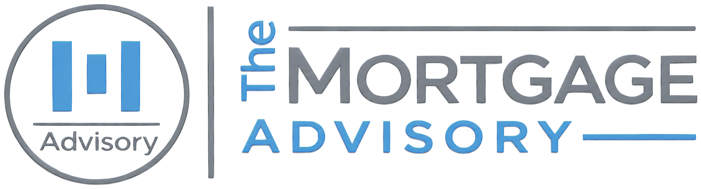

MORTGAGE BANKER & BROKER · CA · TX · FL · CO
NMLS #1549739 · Equal Housing Lender
Free guide · Reverse mortgages · Age 62+
Your Home.Your Housing Pension.
A plain-English guide to how a reverse mortgage works, who it fits, what it really costs, and how it protects you and your family.
What you'll learn
✓How it worksCash from your equity with no required monthly mortgage payment.
✓Who it fits, and who it doesn'tAn honest checklist before you spend a dime.
✓Your three optionsFHA-insured HECM, jumbo reverse, and reverse mortgage second.
✓How you get the moneyLine of credit, monthly payments, lump sum, or a mix.
✓Every cost, up frontThe HUD-set costs, in plain dollars and percentages.
✓What protects your familyYour heirs' options, and why they never owe more than the home is worth (HECM).
✓Myths and red flagsWhat people get wrong, and what a real scam looks like.
✓Your checklistQuestions to ask any lender, and what to have ready.
HOW IT WORKS1Free equity review2Counseling session3Apply & appraise4Close & get funds
Ace AusarMortgage Banker · NMLS #1143018
The Mortgage Advisory, Inc. · (949) 649-4499
TheMortgageAdvisory.com · NMLS #1549739
Free guide · Reverse mortgages
Welcome
A straight answer, not a sales pitch
You've spent decades paying down your home. A reverse mortgage is one way to let that equity work for you in retirement, while you keep living in the home you love.
It's also a loan with real costs and real rules, and it isn't right for everyone. I've helped a lot of families with reverse mortgages, and the happiest ones understood exactly how it works before they signed, usually with their kids at the table.
That's what this guide is for. It explains how a reverse mortgage works in plain English, who it fits (and who it doesn't), what it costs, and how it protects you and your family. No pressure, no jargon.
When you're ready to see your own numbers, our team is a phone call away.
Ace Ausar
Founder, The Mortgage Advisory, Inc. · 25+ years in real estate and lending
Ace Ausar
Mortgage Banker
NMLS #1143018
1How a reverse mortgage works
2Is it right for you?
3Your options and how you get the money
4What it costs
5What protects you and your family
6Myths, facts, and red flags
7Your checklist and next steps
Free guide · Reverse mortgages
1 · How it works
How a reverse mortgage works, in plain English
It's a loan against your home's equity where you don't make a monthly mortgage payment. Instead, interest and fees are added to the balance over time.
1You keep the title and keep living in your home.
2You receive money as a line of credit, monthly payments, a lump sum, or a mix.
3The balance grows over time instead of shrinking.
4The loan is repaid when the last borrower sells, moves out, or passes away, usually from the sale of the home.
What you still pay: property taxes, homeowners insurance, HOA dues if you have them, and basic upkeep. That's the deal, and it's how you keep the loan in good standing. Any equity left when the home is sold belongs to you or your heirs.
The "housing pension" idea
In much of the world, a reverse mortgage isn't seen as a last resort. It's seen as a pension paid by your home: you spent decades building equity, and in retirement it pays you back while you age in place.
South KoreaJutaek Yeongeum: "Home Pension," government-backed, age 55+
SwitzerlandImmobilienrente: "real estate pension"
SwedenHypotekspension: "mortgage pension"
United StatesHECM: a federally insured "reverse mortgage"
Same idea, different name. In the U.S., most reverse mortgages are HECMs (Home Equity Conversion Mortgages), insured by the Federal Housing Administration (FHA). There are also private ("proprietary") reverse mortgages for higher-value homes or for people who want to keep their current first mortgage.
Free guide · Reverse mortgages
2 · Is it right for you?
Who it fits, and who it doesn't
Often a good fit
- Homeowners 62 or older (some private programs start at 55, depending on state) with solid equity
- People who want to end a monthly mortgage payment and free up cash flow
- Retirees who want a safety net: a line of credit for health care, home repairs, or a market downturn
- Anyone who wants to age in place instead of selling and moving
Usually not the right fit
- You plan to move within a few years
- You may need long-term care soon (a HECM comes due after more than 12 months in a row away from home)
- Paying property taxes and insurance would still be a stretch
- Leaving the home free and clear to your heirs is your top priority
The basic requirements for a HECM
- Age 62 or older for every borrower. A younger spouse can still be protected.
- Primary residence: you live in the home as your main home.
- Enough equity to pay off any current mortgage and still leave a meaningful benefit. Often around half the home's value or more; it depends on the youngest borrower's age, interest rates, and your home's value (FHA counts value up to $1,249,125 in 2026).
- Independent counseling with a HUD-approved counselor before you apply. Family members are welcome.
- A financial assessment of your income, credit, and history of paying property taxes and insurance. If there are gaps, part of the loan may be set aside to pay those bills for you.
- An eligible home: single-family, 2–4 units you live in, FHA-approved condos, and some manufactured homes.
Don't guess whether you qualify. Give us your age, your home's rough value, and what you owe, and we'll tell you in one conversation whether it makes sense, before anyone pulls credit.
Free guide · Reverse mortgages
3 · Your options
Three kinds of reverse mortgage
| FHA-insured HECM | Jumbo (proprietary) reverse | Reverse mortgage second |
|---|
| Who backs it | FHA insurance | Private lender | Private lender |
| Best for | Most homes, up to FHA's national limit | Higher-value homes above FHA's limit | Keeping your current first mortgage |
| Your first mortgage | Paid off at closing | Paid off at closing | Stays in place |
| Minimum age | 62 | 62, or 55 in some states | 55 (62 in Texas) |
| Rate | Fixed or adjustable | Varies by program | Fixed |
| Counseling | Required (HUD-approved) | Varies by program | Independent counselor |
Jumbo reverse mortgages and reverse mortgage seconds are not FHA-insured HECMs. Terms, ages, and availability vary by program and state.
How you can take the money (HECM)
Line of credit
Draw only when you need it. The unused part grows over time, so money you don't touch today can be more money available later.
Monthly payments
For life while you live in the home, or for a set number of years.
Lump sum
One payment at closing (fixed-rate option). Often used to pay off an existing mortgage.
HECM for Purchase
Buy your next home, often a right-sized one, with no monthly mortgage payment afterward.
You can also mix and match: for example, pay off your current mortgage and keep the rest as a growing line of credit.
Free guide · Reverse mortgages
4 · What it costs
Every cost, up front
Reverse mortgages cost more up front than a regular mortgage. We believe you should see every piece before you decide. On an FHA-insured HECM, the main costs are set by HUD:
| Cost | What it is | How much |
|---|
| Upfront FHA mortgage insurance | Pays for the FHA insurance that protects you and your heirs | 2% of the home's value (up to FHA's national limit) |
| Annual FHA mortgage insurance | Ongoing insurance, added to the balance | 0.5% of the loan balance per year |
| Origination fee | The lender's fee, capped by HUD | Greater of $2,500 or 2% of the first $200,000 of value plus 1% above that; never more than $6,000 |
| Closing costs | Appraisal, title, escrow, recording, counseling | Vary by state and home |
| Interest | Added to the balance each month | Fixed or adjustable rate |
Most of these can be paid from the loan itself rather than out of your pocket. That's convenient, but it also means less equity left later, so we'll show you both numbers.
Jumbo reverse mortgages and reverse mortgage seconds don't carry FHA insurance, so their costs are structured differently. We'll lay any options side by side, along with the alternatives: selling and downsizing, a HELOC, or a home equity loan.
How we're paid
The Mortgage Advisory arranges reverse mortgages through approved partner lenders as your mortgage broker. We'll tell you up front who your lender is and exactly how we're paid; it's all on your Loan Estimate.
Free guide · Reverse mortgages
5 · Protections
What protects you and your family
- You keep your home. The title stays in your name. You can't be forced out as long as it's your main home and you keep up with taxes, insurance, and upkeep.
- Non-recourse (HECM). Neither you nor your heirs will ever owe more than the home is worth, even if the balance grows past it.
- Independent counseling. Before a HECM, you meet with a HUD-approved counselor who doesn't work for us.
- Eligible non-borrowing spouses can have protections to stay in the home under HECM rules.
- A set-aside for taxes and insurance can be built into the loan so those bills are paid for you.
When the loan comes due
There's no monthly mortgage payment, but the loan comes due when the last borrower sells, passes away, or moves out for good (including more than 12 months in a row in a care facility), or if property taxes, insurance, or HOA dues aren't paid, or the home isn't kept in reasonable repair.
What your heirs can do
Keep itPay off the loan, usually with a new mortgage. On a HECM, for the lesser of the balance or 95% of the appraised value.
Sell itPay off the loan from the sale and keep any equity left over.
Walk awayIf the home is worth less than the loan, hand it back. On a HECM, heirs never owe the difference.
On a HECM, heirs generally have 30 days to respond and about 6 months to sell or refinance, with possible extensions if they're actively working on it.
Our advice: keep a family member in the loop, open any mail from your loan servicer right away, and send back the yearly occupancy form. When people have problems, it's almost always because taxes, insurance, or paperwork slipped through the cracks.
Free guide · Reverse mortgages
6 · Myths and facts
What people get wrong
MythThe bank takes your house.
FactThe title stays in your name. You live there as long as it's your main home and you keep up with taxes, insurance, and upkeep.
MythMy kids will be stuck with the debt.
FactOn a HECM, your heirs never owe more than the home is worth. They can keep it, sell it and keep the equity, or walk away.
MythIt's free money.
FactIt's a loan. Interest and fees add up over time, and there's usually less equity left later. That's the trade-off.
MythYou can't have one if you still owe on your home.
FactMany borrowers use a reverse mortgage to pay off their current mortgage and end that monthly payment.
MythIt's a last resort.
FactMany planners use a HECM line of credit early, as a growing safety net, rather than waiting for an emergency.
Red flags: what a real scam looks like
- Someone rushing you to sign, or telling you to skip counseling or leave your family out of it
- Being told to put the money into an annuity, insurance policy, or investment they happen to sell (in California, no one can require you to buy an annuity to get a reverse mortgage)
- Promises like "free money" or "no payments ever"
- A contractor offering to "set up the loan" to pay for their own work
- Anyone asking you to sign over your deed
If you run into any of that, stop. Bring in a family member, and don't sign anything until you've had your counseling session.
Free guide · Reverse mortgages
7 · Next steps
Your checklist
Questions to ask any lender
- Is this an FHA-insured HECM or a private (proprietary) loan?
- Who is the actual lender, and how are you paid?
- What are all the upfront costs, and how much will come from the loan?
- How much can I get as a line of credit, and how does it grow?
- What happens to my spouse if I pass away or move to care first?
- How will my property taxes and insurance be paid?
- What would my heirs' options be?
- How does this compare with selling, a HELOC, or doing nothing?
Have these handy for the first call
- The age of each homeowner (and spouse)
- Your home's rough value
- What you owe on your mortgage, if anything
- Your latest property tax bill and insurance policy
- Your monthly income (Social Security, pension, retirement accounts)
- A family member or trusted advisor who'd like to join
Please don't send Social Security or account numbers by email or text. We'll collect documents securely when it's time.
See your own numbers
Book a no-pressure call with an advisor. We'll tell you plainly whether a reverse mortgage fits, and compare it with your other options.
TheMortgageAdvisory.com/book · (949) 649-4499
Prefer Spanish? Hablamos español: TheMortgageAdvisory.com/es/book
 Scan to book
Scan to book
About The Mortgage Advisory
The Mortgage Advisory, Inc. is a mortgage banker and broker licensed in California, Texas, Florida, and Colorado, NMLS #1549739. Founded by Ace Ausar, a mortgage banker with 25+ years in real estate and lending. We lend directly on conventional, VA, and Non-QM loans, and we arrange FHA loans, reverse mortgages (HECM and proprietary, including second-lien reverse mortgages), and HELOCs through approved partner lenders as your mortgage broker. We always tell you up front who your lender is and how we're paid.
999 Corporate Drive, Ste 100, Ladera Ranch, CA 92694
(949) 649-4499 · Ace@TheMortgageAdvisory.com · TheMortgageAdvisory.com
California: DFPI California Financing Law license 60DBO-157752. Loans made or arranged pursuant to a California Financing Law license. Texas: SML Mortgage Company License, NMLS #1549739. Florida: Office of Financial Regulation Mortgage Broker License MBR5368. Colorado: Mortgage Company Registration, NMLS #1549739; regulated by the Colorado Division of Real Estate. Full licensing and disclosures: TheMortgageAdvisory.com/licensing. NMLS Consumer Access: nmlsconsumeraccess.org.
Important disclosures
- This material has not been reviewed, approved, or issued by HUD, FHA, or any government agency.
- With a reverse mortgage, borrowers must continue to pay property taxes and homeowners insurance and maintain the home. The loan becomes due when the last borrower no longer lives in the home as a primary residence, sells the home, or does not meet the loan terms.
- Proprietary reverse mortgages, including second-lien reverse mortgages, are not FHA-insured Home Equity Conversion Mortgages (HECMs). Terms, eligibility, and availability vary by program and state.
- The Mortgage Advisory is not affiliated with or endorsed by HUD or the Federal Housing Administration.
- Figures in this guide (including FHA limits and HUD-set costs) are current as of 2026 and can change. Examples are illustrative only.
- This is general information, not a commitment to lend. All loans are subject to credit approval, underwriting, and property valuation. Rates, terms, and programs are subject to change without notice. This is not legal, tax, or investment advice; consult your own advisors.